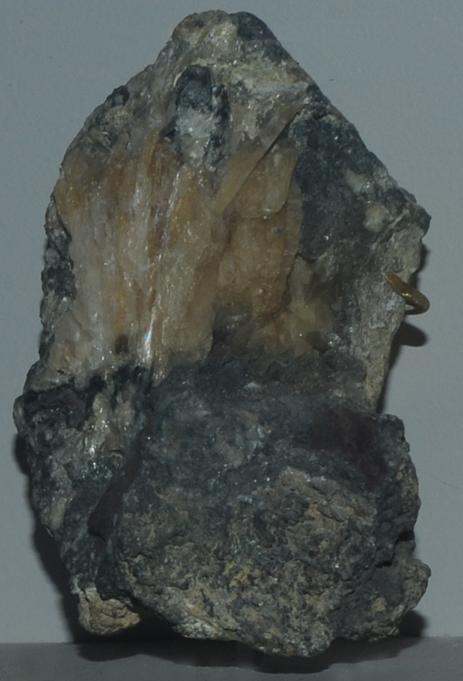

|

| Pb3O2Cl2
This sample of mendipite is displayed in the Smithsonian Museum of Natural History. Mendipite is a chloride of lead with the composition Pb3O2Cl2. The sample at left is about 7 cm across and is from Mendip Hills, Somerset, England. It is described as mendipite with cerussite and galena. The mendipite is typically colorless to white or gray.
|